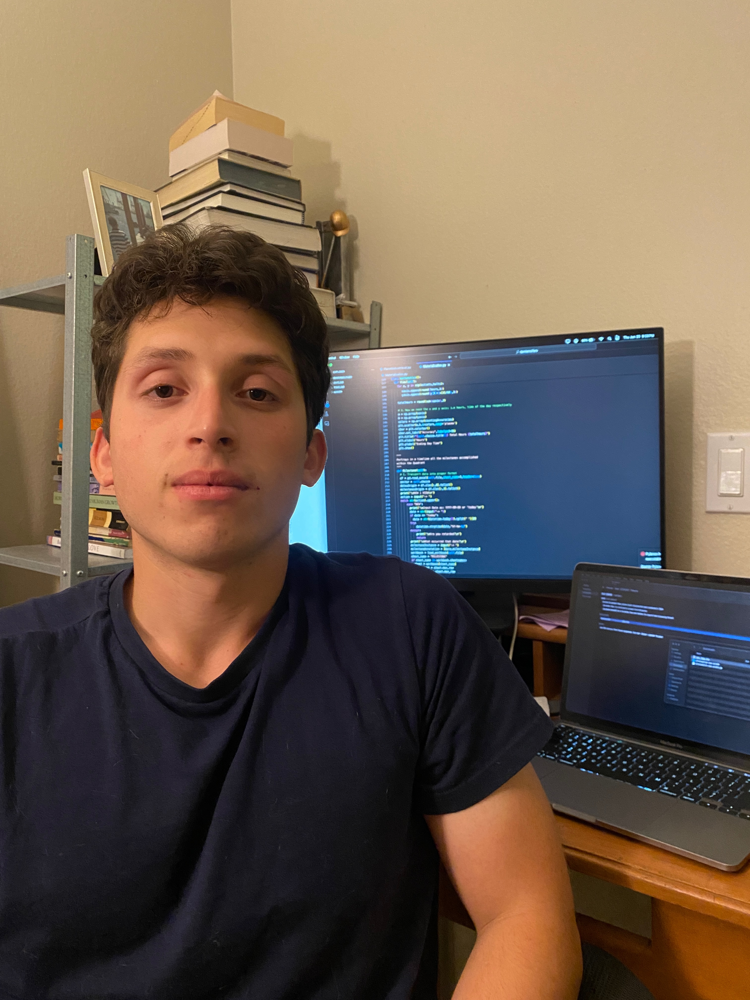

Who am I?
As the collectively attributed quote from Leonardo da Vinci states:
Art is never finished, only abandoned.
The only way one can answer that question is only after one's demise as it is that point where one stops changing. But if you really want an answer:
But if you really want an answer from me:
I consider myself a human who is expressing and materializing its idiosyncrasy with Computer Science, Mathematics, Humanities, and other Natural and Social Sciences.
This is me currently, at 22 years old.
Alma Mater: University of California - Davis between 2019-2022. In college I studied for a B.S. in Computer Science although I immersed into many diverse academic fields during my undergrad years, ranging from Humanities and Social Sciences such as Archeology, Anthropology, and Psychology, to the Natural Sciences such as Geology, Marine Biology, and Genetics. What can I say... I enjoy and immerse in every aspect of Knowledge that I can grasp.
I tend to post some idiosyncracies in Youtube and repost them on X.
Professionally speaking, this is who I am.
However, in my opinion, the best way to know oneself and portray oneself to the world is by creating. The materialization of one's ideas provide insight to one's creative and cognitive processes, as well as one's psyche. Therefore, if you want to know me, check my World.